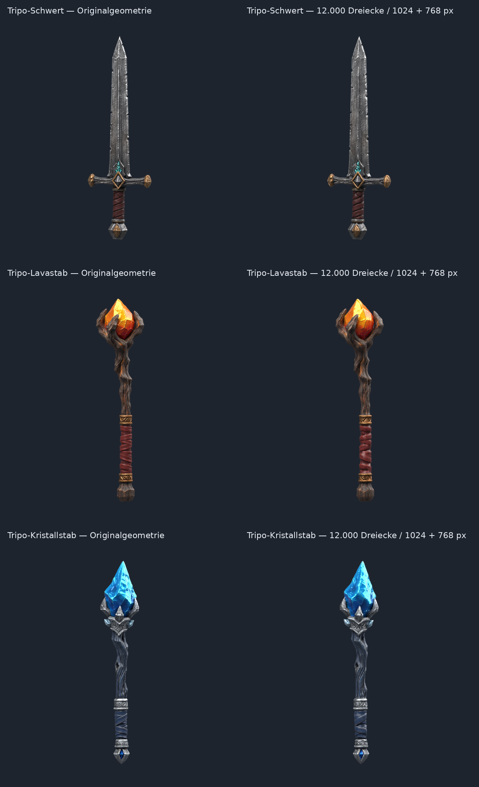

Echte Blender-PBR-Renderings unter identischer Kamera und Beleuchtung. Links: unveränderte Quellgeometrie nach gemeinsamer metrischer Ausrichtung. Rechts: vereinfachte Geometrie mit den auf 1024 Pixel (Farbe/Material) beziehungsweise 768 Pixel (Normal-Map) reduzierten Originaltexturen. Die Originaldateien bleiben unverändert.
